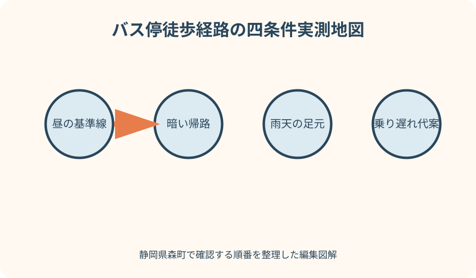
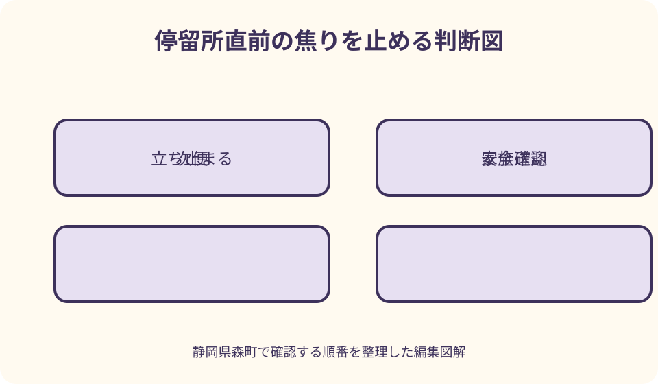

交通・外出・生活動線｜最終確認 2026-08-10
静岡県森町のバス停まで歩く｜往復・雨天・夜道を実測する
地図に表示される徒歩分数は、信号待ち、横断、坂、狭い路肩、雨天、荷物、本人の歩行速度を十分には表しません。静岡県森町では、町なかの交差点と山間部の見通し、夕方の照明条件も経路ごとに異なります。町営バスの正式な停留所と便を確認したうえで、実際の利用時刻に往復し、危険を感じる場所と乗り遅れ時の判断を記録します。これは安全を保証する判定ではなく、無理をしない代案を持つための現地確認です。

編集イラスト地図の徒歩分数を仮値として扱う
経路検索の徒歩分数は出発点と停留所の位置関係を知る入口です。玄関、敷地内の段差、信号待ち、停留所の乗車位置まで含む実時間ではないため、そのまま発車時刻から引きません。
実測は、普段使う靴、杖、かばんで行います。家族だけが早足で測った時間では、高齢者や子ども、荷物のある日の判断材料になりません。
計時は玄関を出た瞬間から、バス標識の前で安全に待てる位置へ着くまでです。横断待ちと休憩も止めずに含め、往路と帰路を別々に記録します。
一回の最短記録ではなく、三回程度の幅を見ます。信号、通過車両、体調で変わるため、最長実測へ待機余白を加えて出発目安を作ります。
正式な停留所と乗る方向を確定する
森町営バスは大河内線と吉川線が案内され、路線図と時刻表があります。検索地図の名称だけでなく、町公式の停留所名、進行方向、予約便かを確認します。
同じ名称の上下停留所が道路の反対側にある場合、朝に使う側と帰りに降りる側では徒歩経路が変わります。片側だけ確認して往復安全と判断しません。
予約が必要な便は、徒歩実測に加えて予約期限とキャンセル方法を確認します。停留所へ着けても予約条件を満たさなければ利用できるとは限りません。
民間バスとの共用停留所や近接する別路線では、標柱の表示と行先を現地で読みます。家族へは停留所名だけでなく、道路のどちら側か分かる写真や目標物を共有します。
最初の実測は晴れた昼間に行う
初回は交通量や足元を見やすい昼間を選びます。実際の利用者と家族が一緒に歩き、危険を感じた理由をその場で地図へ記します。
途中で、歩道の有無、路肩幅、側溝、段差、舗装の傷み、草木の張り出し、犬や農作業車との接近を確認します。写真は安全な場所で撮ります。
休める場所があるか、私有地へ入らず立ち止まれるかも見ます。塀や門の前を休憩場所に決めず、公的な空間か所有者の許可がある場所を選びます。
初回に歩けたことは、毎日安全に歩ける保証ではありません。工事、植生、季節、交通量の変化があれば再測定する前提で日付を残します。
横断箇所は距離より安全確認を優先する
最短経路が道路の途中を横切る案でも、近くに横断歩道や信号があれば候補にします。数分短くするため、車の間を縫う横断を日常経路にしません。
横断歩道でも、車が必ず止まるとは限りません。左右を確認し、停止した車の陰から別車両が来ないかを見て、青信号でも周囲を確かめます。
カーブ、坂の頂上、植え込み、駐車車両の近くは、歩行者から車が見えず、車側からも歩行者が遅れて見える場合があります。見通せる位置へ経路をずらします。
乗り遅れそうなときほど横断判断を急ぎやすくなります。発車するバスが見えても走って渡らず、次便や送迎へ切り替える家族ルールを決めます。
歩道がない道は退避場所を探す
山間部や集落内には歩道がない区間があります。道路端の白線だけを安全帯と思わず、側溝、崩れ、草、電柱で歩ける幅が変わる箇所を測ります。
大型車や農作業車が来たときに立ち止まれる場所を、往路の進行方向ごとに確認します。カーブの内側や道路のくぼみへ無理に入りません。
歩行者は原則として道路の右側端を通行する考え方がありますが、歩道・路側帯や道路状況により確認が必要です。現地標識と警察の案内に従います。
路肩が実際の利用者には狭すぎるなら、別停留所、家族による停留所送迎、タクシーを検討します。『慣れれば歩ける』を結論にしません。

待ち場所を乗車位置と分けて見る
標柱がある場所でも、車道から離れて立てる幅、屋根、ベンチがあるとは限りません。車両のミラーや曲がる車に近づかず待てる位置を確認します。
複数人が待つ日、車いす、杖、買い物袋がある日を想定します。歩行者の通路を塞がず、私有地や店舗入口へ広がらない場所かを見ます。
雨天は屋根の有無だけでなく、車がはねる水、側溝からの流れ、傘が車道へ出ない幅を確認します。屋根がないことを当日知る計画にしません。
バスが来たとき、道路へ早く出て合図するのではなく、運行者が案内する乗車方法に従います。暗い時間は明るい服や反射材を補助として使います。
夜間は同じ道を別経路として測る
昼に見えた段差、側溝、標識が、夕暮れ後には見えにくくなります。実際の帰宅時刻に家族同伴で歩き、照明の切れ目と車の見え方を確認します。
街灯がある道路でも、植木やカーブで影になる場所があります。スマートフォンの画面だけを光源にせず、両手と視線を保てる小型灯を準備します。
静岡県警は夜間の無理な横断を避け、横断歩道・信号を使い、明るい服装や反射材で存在を知らせるよう案内しています。反射材は安全確認の代わりではありません。
帰りの停留所から自宅まで暗すぎる場合は、一停留所手前で降りる、家族が停留所へ迎えに行くなどを比較します。距離だけで代案を選びません。
雨天は排水・傘・靴を実測する
雨の日は晴天と同じ分数へ少し足すだけでは不十分です。水たまり、側溝の流れ、泥、落ち葉、白線、坂で歩幅が変わるため、弱い雨の日に無理のない範囲で確認します。
傘は視界を狭め、狭い路肩で車道側へ張り出します。レインウェアを使う場合も、フードで左右確認が妨げられないか、荷物を両手から離せるかを試します。
靴底が滑る、足元が濡れる、バス内で傘を扱いにくいなど、本人の負担を記録します。家族が歩けたから本人も同じとは判断しません。
大雨、雷、強風、冠水や道路規制がある場合は実測を中止します。公共交通が運行していても、停留所までの徒歩が危険なら外出延期や送迎へ切り替えます。
帰路は疲労と荷物を加えて測る
往路は元気でも、通院、仕事、学校、買い物の後は歩く速度が落ちます。帰りの実測は、目的地から戻った時間帯と似た条件で行います。
買い物袋、学用品、傘があると、横断時の左右確認や手すりの使用が難しくなります。荷物を減らす、リュックにする、配送を使う代案も記録します。
降車後すぐ急坂や横断がある停留所では、座って休める場所があるかを見ます。車道脇で立ち止まることを休憩にしません。
帰宅できたかだけでなく、疲労、息切れ、痛み、転びそうになった箇所を本人の言葉で残します。健康判断は医療職へ相談し、記事だけで歩行可否を決めません。
子どもと高齢者は本人の行動を観察する
子どもには、どの横断歩道を使い、バスが見えても走らず、乗り遅れたらどこで待つかを実地で確認します。説明を聞けたことと単独で実行できることは別です。
高齢者には、歩行速度だけでなく信号時間、車との距離判断、暗所、段差、聞こえ方を本人と確認します。家族が手を引けば歩ける経路を単独利用の基準にしません。
杖や歩行器を使う場合、狭い路肩と乗降段差を確認します。バスの車両設備や介助対応は運行者へ事前に尋ね、利用できると断定しません。
本人が不安を訴えた場所は、家族の『大丈夫』で消さず地図へ残します。別経路、時間変更、迎えの条件を一緒に考えます。
乗り遅れ時の四つの選択
第一は次便を待つことです。時刻、予約の要否、安全に待てる場所、トイレ、暑さ寒さを確認し、長時間の路上待機にならないかを見ます。
第二は自宅へ戻ることです。戻る道が暗い、雨が強い、体調が悪い場合は、往路を逆に歩けばよいとは限りません。
第三は家族送迎、第四はタクシーです。連絡先、迎え場所、本人が電話できない場合の方法を決め、配車や家族到着を保証しません。
遅刻を避けるため無理な横断や走行をしないと、学校・勤務先・病院にも伝えておきます。遅延連絡の手段を持つことが安全余白になります。
道路工事・植生・季節変化を更新する
工事で歩道や横断位置が変わると、以前の実測は使えません。町・県の道路情報、現地予告、運行者の停留所変更を外出前に確認します。
夏は草木が路肩へ張り出し、冬は日没が早く、落ち葉や凍結が生じる場合があります。春に歩いた記録を年間の安全判定にしません。
停留所の移設や名称変更があると、地図アプリがすぐ更新されない場合があります。町公式時刻表と運行者の案内を優先します。
危険箇所を見つけた場合は、道路の種別と場所を確認し、管理者や警察など適切な窓口へ伝えます。自分で道路上へ物や照明を設置しません。

良い点
森町公式の町営バス案内には路線図、時刻表、予約便の入口があり、停留所を確定してから徒歩確認へ進めます。
往路・帰路・夜間・雨天を分けて歩くと、地図だけでは見えない横断待ちや照明の切れ目を家族で共有できます。
実測時間を使えば、発車直前に家を出る習慣を改め、横断で焦らない余白を設定できます。本人の速さに合う点が利点です。
乗り遅れ時の選択を決めておくと、走る、危険な場所で待つ、知らない車へ頼るなど、その場の無理な判断を減らせます。
注文したい点
利用者には、時刻表と路線図だけでなく、停留所の道路側、屋根・ベンチ、横断歩道の位置が分かる公式停留所地図があると確認しやすくなります。
予約便の印や連絡方法は初めての人に難しいため、停留所へ歩く時間も含めた利用例があると、出発余白を作りやすくなります。
山間部では歩道や照明の有無が生活利用を左右します。停留所別に夜間・雨天の注意を住民から更新できる仕組みも望まれます。
道路工事による仮停留所は、住所だけでなく安全な徒歩経路を示してほしいところです。運行者と道路管理者の案内を一か所から確認できると助かります。
代案・結論
徒歩経路が狭い、暗い、横断が難しい場合は、別停留所、明るい時間の便、家族による停留所送迎、タクシーを比べます。
雨天だけ難しいなら、晴天はバス、雨天は送迎や外出延期という二本立てにします。毎日同じ手段へ固定する必要はありません。
乗り遅れそうでも走らず、危険な横断をしません。次便、自宅へ戻る、家族、タクシーの順は本人の場所と体調で選びます。
結論は、晴天昼、実利用時刻の帰路、雨天を本人の速度で実測し、横断・見通し・照明・待機を地図化することです。安全保証ではなく中止判断の材料にします。
大石の視点
森町で住まいを見るとき、『バス停徒歩五分』は生活の答えではありません。坂、横断、夜の暗さ、停留所の反対側まで歩いて初めて日常利用を判断できます。
車を手放した親の家では、玄関から停留所までの百メートルが最大の課題になることがあります。バス路線の有無と、自力で乗車位置へ着けるかを分けます。
一度歩きにくいと分かっても、すぐ転居や不動産処分へ進む必要はありません。便の時間変更、別停留所、家族送迎を試して困難を具体化します。
よい現地確認は距離を測るだけでなく、本人がどこで怖いと感じたかを残します。その声を経路や家族分担へ反映することが、続けられる移動設計です。
現地確認票の仕上げ
停留所名、路線、方向、予約便、発車時刻、公式確認日を書きます。道路のどちら側か分かる目標物も記します。
玄関出発から到着まで、横断待ち、休憩、最長時間を記録し、余白を足します。家族の速さではなく本人の実測を使います。
横断歩道、見通し不良、狭い路肩、照明の切れ目、雨天水たまり、待機位置を地図へ印します。写真撮影は道路外の安全な場所で行います。
最後に次便、帰宅、家族、タクシーの連絡先を記載します。道路状況と運行は変わるため、季節・工事・体調変化ごとに再確認します。
暑さ・寒さと待機時間を測る
夏の徒歩確認では、気温だけでなく日陰の有無、照り返し、停留所で風を避けられるかを見ます。短い距離でも待ち時間が長いと負担が増えるため、乗車までを一続きで測ります。
飲み物や帽子を用意しても、暑熱時に歩けることを保証しません。体調や気象情報を確認し、強い暑さが予想される日は早い便、送迎、外出延期へ変えます。
冬は日没、路面凍結、冷たい風、手袋でのスマートフォン操作を確認します。手をポケットへ入れたまま歩くことを前提にせず、転倒時に手を使える服装を選びます。
待ち場所に屋内施設が近くても、利用者でない人が自由に待てるとは限りません。営業時間や利用条件を確認し、閉まっていた場合にも道路上で安全に待てるかを考えます。
危険箇所を伝える記録の作り方
家族へ危険箇所を伝えるときは、『怖かった』だけでなく、道路名、目標物、進行方向、時刻、車種、照明、写真位置を記します。写真には私有地や通行人の個人情報を不用意に含めません。
道路管理者へ相談する場合は、舗装、側溝、草木、照明、標識のどれについての連絡かを分けます。設備ごとに所管が違う可能性があるため、改善されると決めつけず現況を具体的に伝えます。
危険を知らせるため自分でカラーコーン、看板、反射板を道路へ置くと、新たな通行障害になり得ます。応急対応が必要に見える場合も、まず町・県・警察など適切な窓口へ連絡します。
工事や剪定で状況が改善された後も、夜間、雨天、帰路の条件を再測定します。一つの箇所が直ったことで経路全体が安全になったとはせず、記録の日付と版を更新します。
公式情報・確認先
掲載内容は次の一次情報を基礎に整理しました。営業、料金、催し、交通は変わるため、出発前または手続き前にリンク先で最新情報を確認してください。
- 公共交通（静岡県森町、2026-08-10確認）
- 森町営バスのご案内（静岡県森町、2026-08-10確認）
- 防災情報（静岡県森町、2026-08-10確認）
- 森町防災ハザードマップ（静岡県森町、2026-08-10確認）
- 歩行者の交通安全情報（静岡県警察、2026-08-10確認）
- 明るい服装と反射材（静岡県警察、2026-08-10確認）
- 秋葉バスサービス公式サイト（秋葉バスサービス、2026-08-10確認）